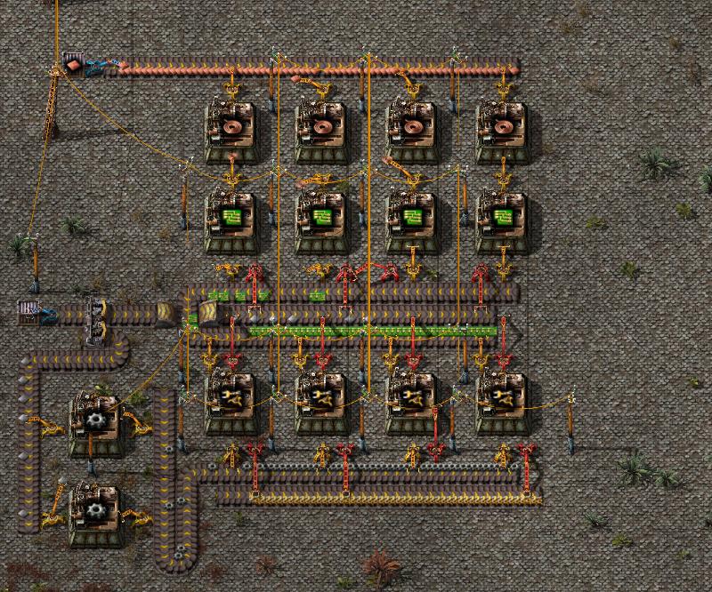
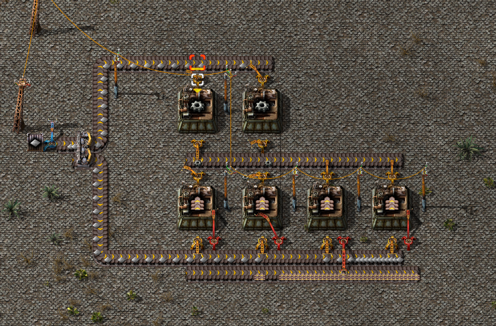
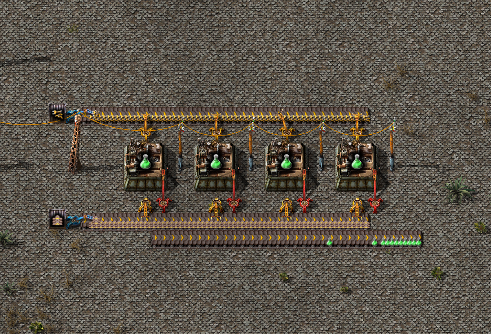

Зелёные пакеты исследований
Чтобы производить зелёные пакеты нам потребуется два мини производства: мини завод манипуляторов, мини завод конвеиров

Манипуляторы делаются из шестерёнок, микросхем и железных плит. Всегда есть возможность расширить часть производства в зависимости от того, чего вам конкретно не хватает.

Конвейрное производство. С помощью разделителя делим поток железных плит на два. Первый отправляем на производство шестерёнок, второй отправляем сразу на производство конвейров.

Используя конвейры подводим два потока (производство конвейров и манипуляторов) к производству зелёных пакетов.